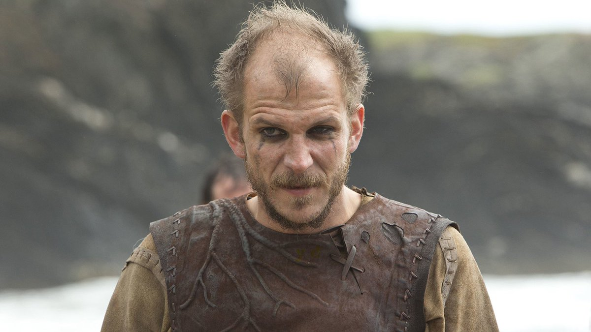
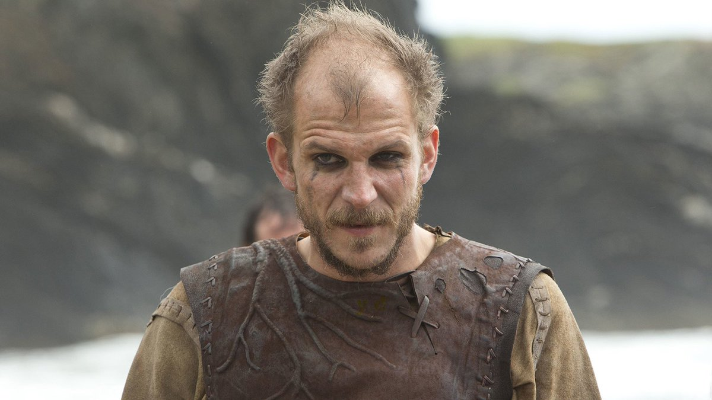

Рагнар
Рагна́р Лодбро́к (др.-сканд. Ragnarr Loðbrók) - полулегендарный скандинавский конунг из рода Инглингов,
ключевой персонаж сериала.
Смелый воин и амбициозный вождь, Рагнар на протяжении почти всей своей жизни следует пути викинга.
Рассекая
море в поисках боевой славы и наживы, он стремится обрести новые знания, открыть неизвестные земли и
изменить нелегкую судьбу своего народа, живущего в суровых условиях Скандинавского полуострова
Лагерта
Лагерта-отважная и независимая женщина способна проявлять железную решимость, когда дело касается ее
личного достоинства, семьи или власти. Лагерта также известна своим милосердием и благородством.
Своему первому мужу Лагерта дарит двоих детей: сына Бьёрна и дочь Гиду. Любовь Рагнара и Лагерты начинает
разрушаться, когда Гида погибает от эпидемии, а третий ребенок рождается мертвым. Когда в дом Рагнара
приходит беременная от него Аслауг, Лагерта разрывает брак и вместе с Бьёрном отправляется в Хедебю, где
выходит замуж за жестокого ярла Сигварда. Убив нелюбимого мужа, воительница занимает его трон. Став ярлом,
она остается верной подругой Рагнару Лодброку, участвуя в возглавляемых им походах.
Флоки
Флоки – «безумный гений», строитель кораблей для военных походов в сериале «Викинги». Герой считает себя
потомком бога Локи, свято верит в правдивость видений, которые часто его накрывают. Персонаж стал ярким
примером верной дружбы, способности прощать недостатки близкого человека и идти за ним хоть на край света.
В скандинавских сагах Флоки дал имя северной стране Исландии. Однажды норвежский викинг узнал о том, что
на западе расположен любопытный остров, на котором решил побывать. Прихватив с собой семью, друзей и скот,
отправился в путь с помощью трех воронов – птицы указывали дорогу. Привал путешественники сделали в
местечке, названном позднее Озерным Фьордом. Водоемы здесь оказались изобилующими рыбой, а земля
плодородной.

 
